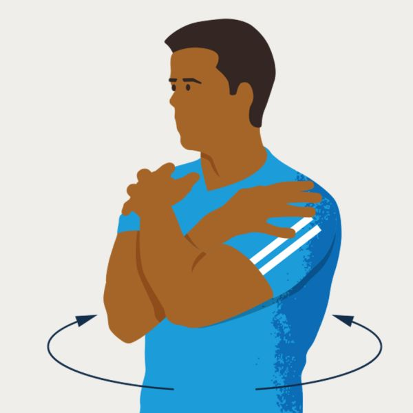
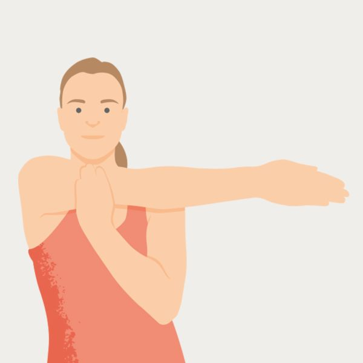
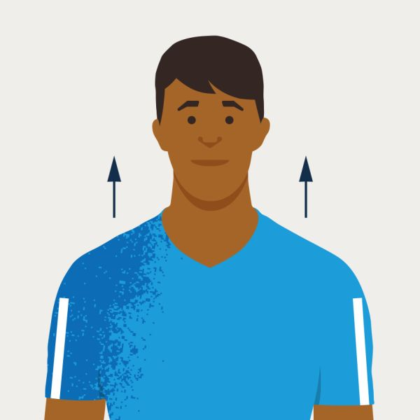
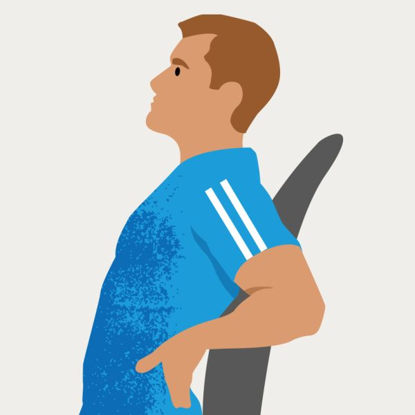
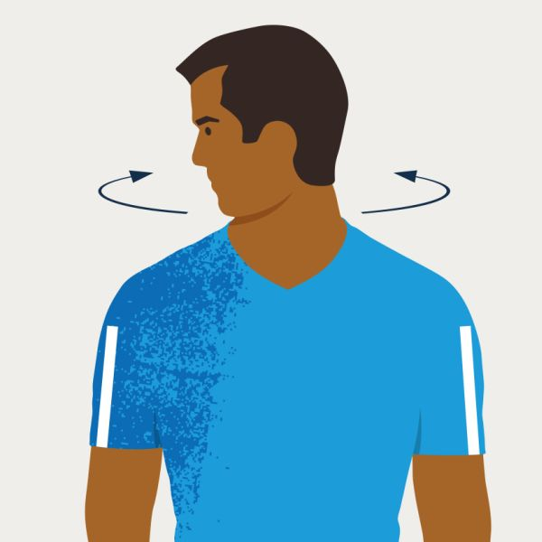
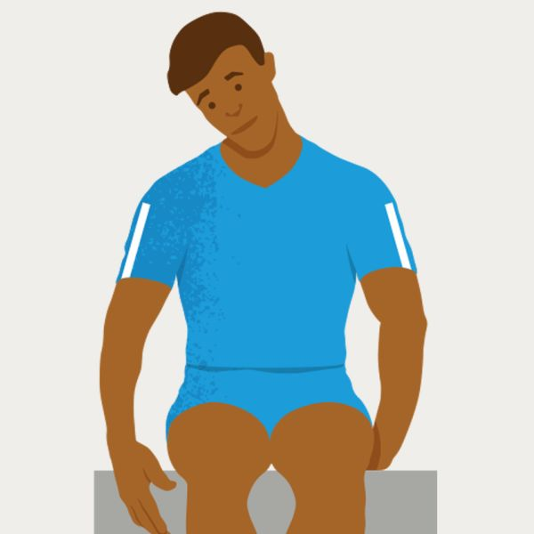
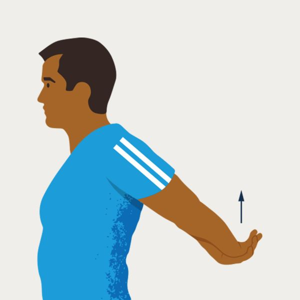
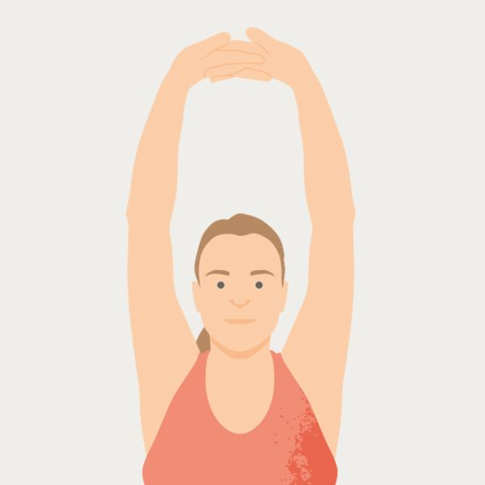

Physical Exercises
-
1. Seated spinal rotation
- While seated, cross your arms over your chest.
- Grab your shoulders.
- Rotate your upper body from the waist, turning gently from left to right as far as feels comfortable.
- You should feel a tension on both side of your lower back as it stretches out.

-
2. Posterior shoulder stretch
- Hold one arm across your body.
- Pull your elbow into your chest.
- You should feel your shoulder gently stretching.

-
3. Shoulder shrugs
- Gently lift your shoulders.
- Let them slowly fall.
- You should feel tension being released as your shoulders drop.

-
4. Sitting back extensions
- Sit straight with your feet together.
- Put the palms of your hands into the small of your back.
- Lean back over your hands, feeling your lower back stretch out.

-
5. Neck rotations
- Keep your head upright.
- Gently turn your head from side to side.
- As you turn your head, try to move it past your shoulder.
- You should feel the muscles on the outside of your neck gradually stretching.

-
6. Upper shoulder and neck stretch
- Sit on one hand.
- Tilt your head away from the hand you’re sitting on.
- Tilt your head slightly forward, towards your shoulder.
- You should feel the muscles in your neck and shoulder being stretch.
- Change sides, and repeat.

-
7. Shoulder extension –one
- Stand up and stretch your arms out behind you.
- Clasp your hands together and gently lift your arms.
- You should feel your shoulders and chest stretching.

-
8. Shoulder extension –two
- Hold both arms above your head.
- Link your hands with your palms facing upwards.
- Reach as high as possible.
- You should feel your shoulders stretching.

Legal:
This information was published by
Bupa's Health Content Team.
Photos are only for illustrative purposes and do not reflect every presentation of a condition and it is not intended to be for medical diagnosis or treatment.